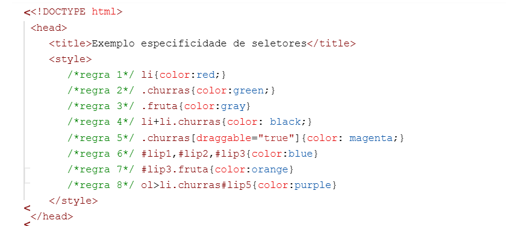
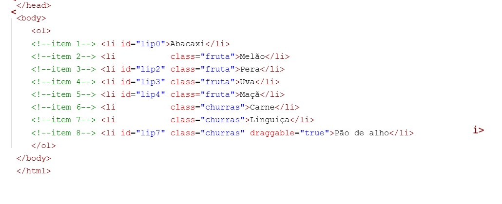
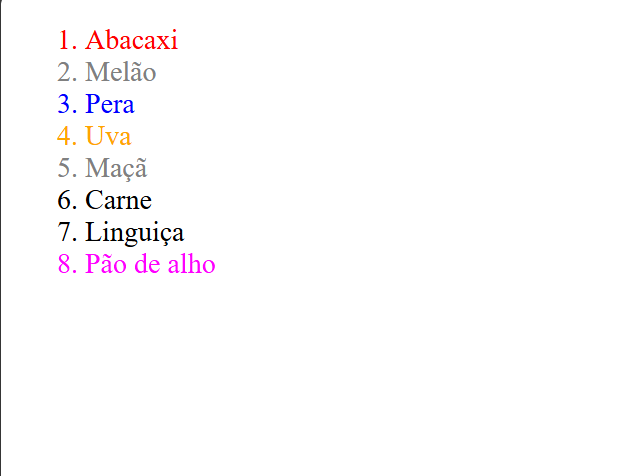

Regra 1: foi utilizado para a tag <li> e define que os elementos que receber essa tag tenham a cor vermelha.
Regra 2: foi utilizado para que o elemento que tiver a classe .churros receba a cor verde.
Regra 3: foi utilizado para que o elemento que tiver a classe .churros receba a cor cinza.
Regra 4: define que apenas os elementos que tiverem a classe .churras recebam a cor preto, mas apenas depois da próxima tag <li>
Regra 5: foi utilizado para que apenas o elemento que tenha a classe .churras receba a cor magenta, mas apenas os elementos que tiverem o draggable=true também.
Regra 6: define que os elementos que tiverem o id=lip1, id=lip2, id=lip3 ou id=lip4 recebam a cor azul.
Regra 7: foi utilizado para que apenas os elementos que tenha o id=lip3 e classe .fruta recebam a cor orange.
Regra 8: Define e Seleciona <ol> os <li> que são filho imediatos de <ol>, seleciona também apenas o <li> que tem classe .churras e id=lip5.

Item 1: recebeu a cor vermelho, porque não existe regra para o id=lip0, então recebeu a regra que foi aplicada a tag <li>.
Item 2: recebeu a cor cinza, porque foi definido essa regra para classe .fruta e tem peso maior que apenas a mudança geral da tag <li>.
Item 3: recebeu a cor azul, porque foi definido essa regra para o id=lip2 e tem peso maior que a classe .fruta.
Item 4: recebeu a cor laranja, porque a o id=lip3 e classe .fruta foi definido juntos, por isso tem o peso maior.
Item 5: recebeu a cor cinza de acordo com sua classe .fruta, porque não tem regra definida para o id=lip4.
Item 6: recebeu a cor preto, porque a a regra define que para a classe .churras e após a próxima tag <li> a cor seja preto
Item 7: recebeu a cor preto, por causa da mesma regra que define o Item 6 que para a classe .churras e após a próxima tag <li> a cor seja preto,
Item 8: recebeu a cor magente, porque a regra define que quando houver class .churros junto a um draggable=true está seja a cor, já que não tem nada definido para o id=lip7.
